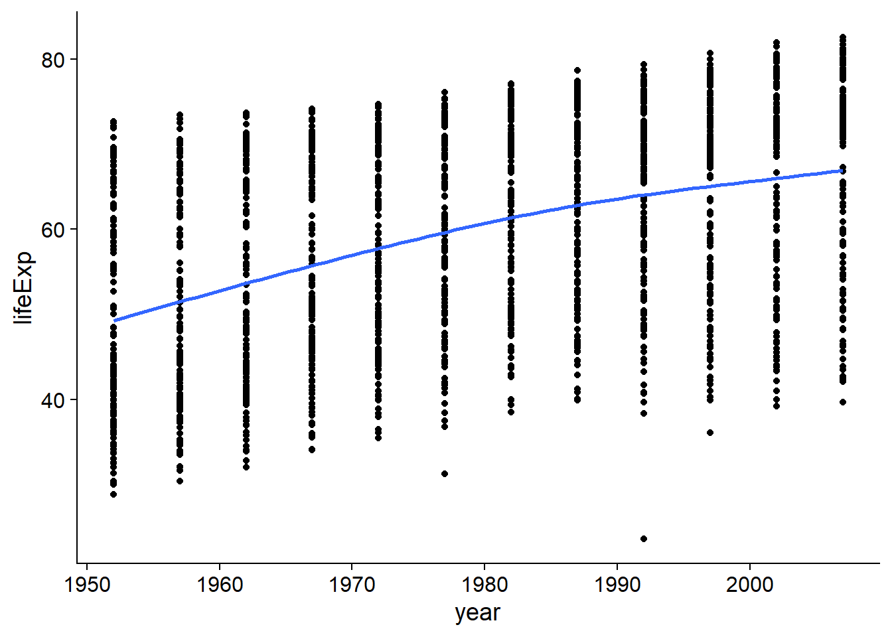
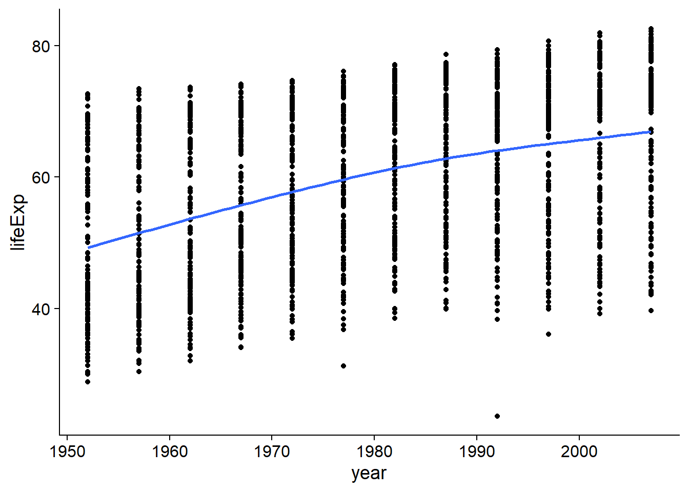
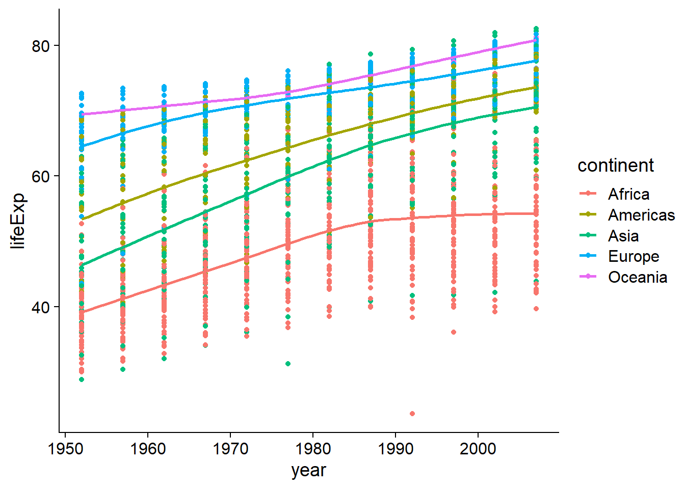
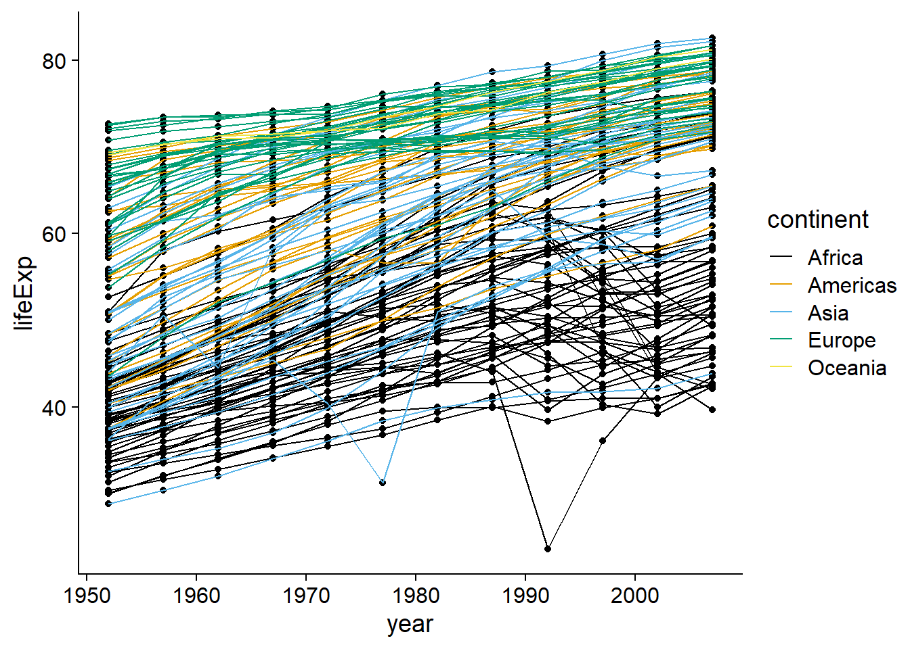
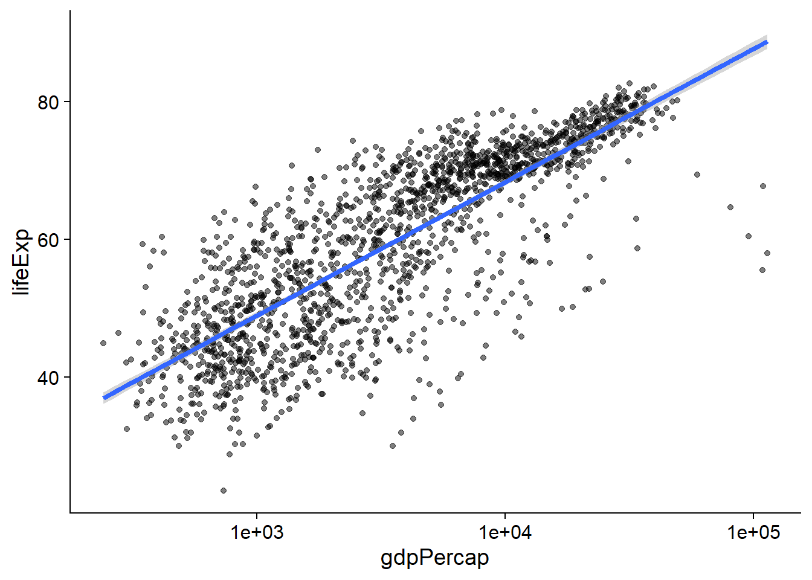
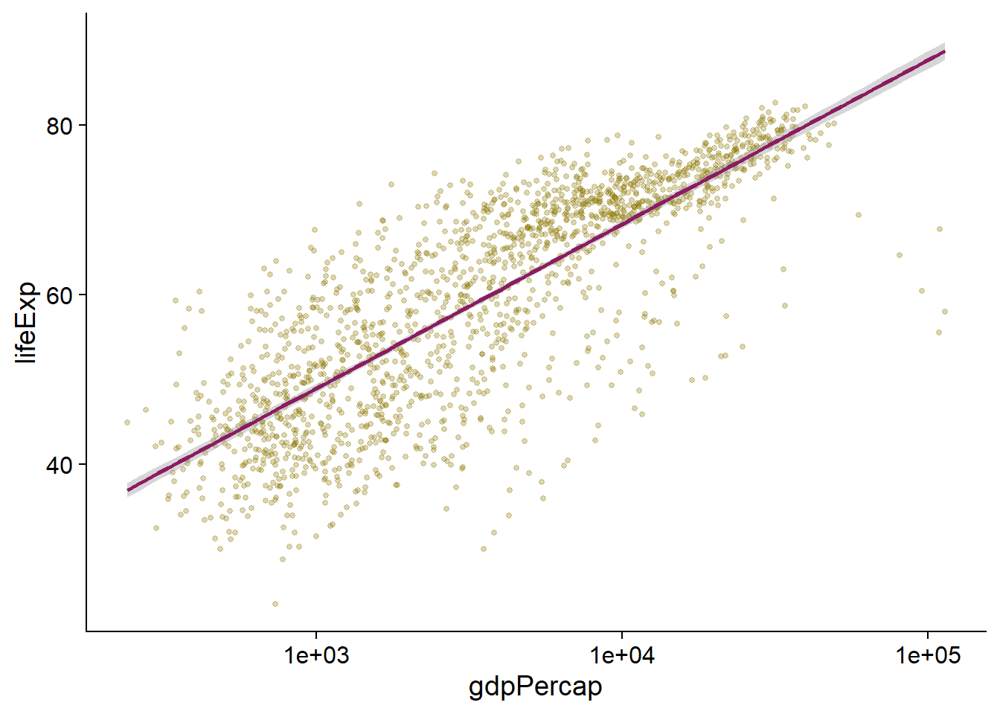
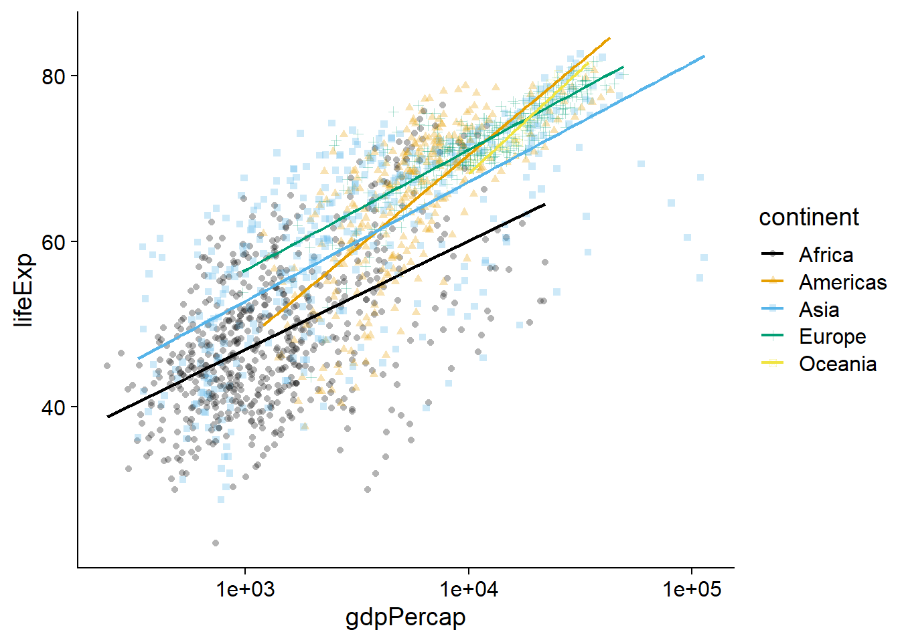
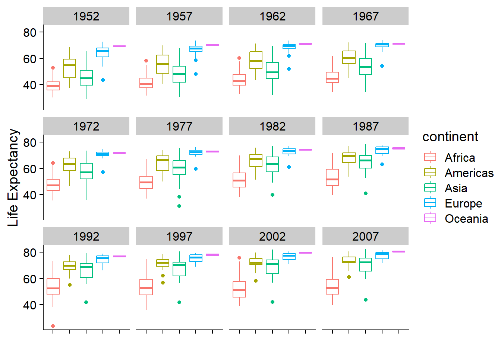

ggplot(data = gapminder, mapping = aes(x = year, y = lifeExp)) +
geom_point() +
geom_smooth(se = FALSE)`geom_smooth()` using method = 'gam' and formula = 'y ~ s(x, bs = "cs")'
The exercises in this document follow along closely with Lesson 8 of R for Reproducible Scientific Analysis, provided by the Software Carpentry community under the creative commons license, CC-BY 4.0. For more information see The Carpentries.
Modify the example so that the figure shows how life expectancy has changed over time:
ggplot(data = gapminder, mapping = aes(x = year, y = lifeExp)) +
geom_point() +
geom_smooth(se = FALSE)`geom_smooth()` using method = 'gam' and formula = 'y ~ s(x, bs = "cs")'

In the previous examples and challenge we’ve used the aes function to tell the scatterplot geom about the x and y locations of each point. Another aesthetic property we can modify is the point color. Modify the code from the previous challenge to color the points by the “continent” column. What trends do you see in the data? Are they what you expected?
ggplot(data = gapminder, mapping = aes(x = year, y = lifeExp, color = continent)) +
geom_point() +
geom_smooth(se = FALSE)`geom_smooth()` using method = 'loess' and formula = 'y ~ x'
Here is a demonstration of drawing points on top of lines.
ggplot(data = gapminder, mapping = aes(x=year, y=lifeExp, by=country)) +
geom_line(mapping = aes(color=continent)) +
geom_point() +
scale_color_manual(values = cbbPalette)Switch the order of the point and line layers from the previous example. What happened?
ggplot(data = gapminder, mapping = aes(x=year, y=lifeExp, by=country)) +
geom_point() +
geom_line(mapping = aes(color=continent)) +
scale_color_manual(values = cbbPalette)
The lines are placed on top of the points.

We can fit a simple relationship to the data by adding another layer, geom_smooth:
ggplot(data = gapminder, mapping = aes(x = gdpPercap, y = lifeExp)) +
geom_point(alpha = 0.5) +
scale_x_log10() +
geom_smooth(method="lm", size=1.5)Warning: Using `size` aesthetic for lines was deprecated in ggplot2 3.4.0.
ℹ Please use `linewidth` instead.`geom_smooth()` using formula = 'y ~ x'
Modify the color and size of the points on the point layer in the previous example.
Hint: do not use the aes function.
ggplot(data = gapminder, mapping = aes(x = gdpPercap, y = lifeExp)) +
geom_point(alpha = 0.3, color = 'gold4', size = 1) +
scale_x_log10() +
geom_smooth(method="lm", size=1, color = 'maroon4')`geom_smooth()` using formula = 'y ~ x'

Modify your solution above so that the points are now a different shape and are colored by continent with new trendlines. Hint: The color argument can be used inside the aesthetic.
ggplot(data = gapminder, mapping = aes(x = gdpPercap, y = lifeExp, color = continent, shape = continent)) +
geom_point(alpha = 0.3) +
scale_x_log10() +
geom_smooth(method="lm", size=0.8, se = FALSE) +
scale_color_manual(values = cbbPalette)`geom_smooth()` using formula = 'y ~ x'

ggplot(data = gapminder,
mapping = aes(x = continent, y = lifeExp, color = continent)) +
geom_boxplot() +
facet_wrap(~year) +
labs(y = "Life Expectancy", x = '') +
theme(axis.text.x = element_blank())